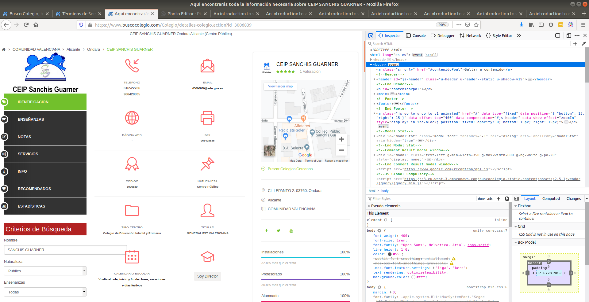
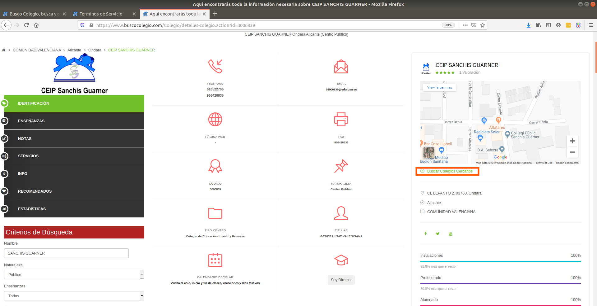
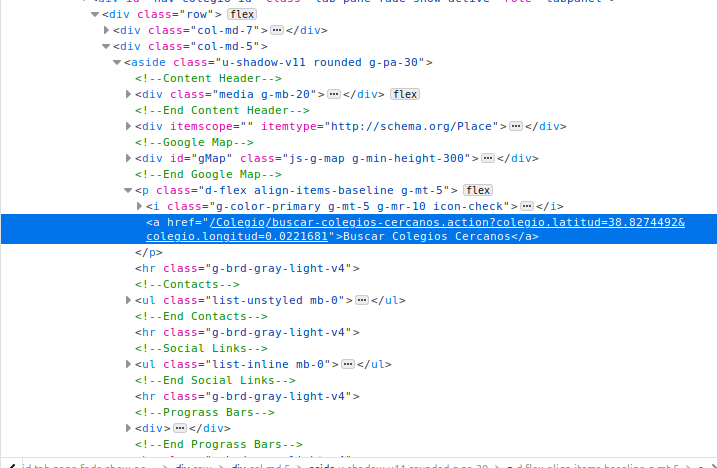

Case study: Scraping Spanish school locations from the web
Jorge Cimentada
Case study: Scraping Spanish school locations from the web
Goal:

Scraping Spanish school locations
www.buscocolegio.com is saved locally on the scrapex package in the function spanish_schools_ex():
[1] "/home/runner/.local/share/renv/cache/v5/R-4.2/x86_64-pc-linux-gnu/scrapex/0.0.1.9999/9aa78cbb3eccaaa811756b4bf07fdd1a/scrapex/extdata/spanish_schools_ex/school_15012626.html"
[2] "/home/runner/.local/share/renv/cache/v5/R-4.2/x86_64-pc-linux-gnu/scrapex/0.0.1.9999/9aa78cbb3eccaaa811756b4bf07fdd1a/scrapex/extdata/spanish_schools_ex/school_15013308.html"
[3] "/home/runner/.local/share/renv/cache/v5/R-4.2/x86_64-pc-linux-gnu/scrapex/0.0.1.9999/9aa78cbb3eccaaa811756b4bf07fdd1a/scrapex/extdata/spanish_schools_ex/school_2009122.html" These are the links to the landing page of each school inside the website. There are 27 schools saved locally.
Scraping Spanish school locations
Let’s see how one school website looks like:
Scraping Spanish school locations

Build a scraper for one school
Read it into R:
{html_node}
<head>
[1] <title>Aquí encontrarás toda la información necesaria sobre CEIP SANCHIS ...
[2] <meta charset="utf-8">\n
[3] <meta name="viewport" content="width=device-width, initial-scale=1, shri ...
[4] <meta http-equiv="x-ua-compatible" content="ie=edge">\n
[5] <meta name="author" content="BuscoColegio">\n
[6] <meta name="description" content="Encuentra toda la información necesari ...
[7] <meta name="keywords" content="opiniones SANCHIS GUARNER, contacto SANCH ...
[8] <link rel="shortcut icon" href="/favicon.ico">\n
[9] <link rel="stylesheet" href="//fonts.googleapis.com/css?family=Roboto+Sl ...
[10] <link rel="stylesheet" href="https://s3.eu-west-3.amazonaws.com/buscocol ...
[11] <link rel="stylesheet" href="/assets/vendor/icon-awesome/css/font-awesom ...
[12] <link rel="stylesheet" href="/assets/vendor/icon-line/css/simple-line-ic ...
[13] <link rel="stylesheet" href="/assets/vendor/icon-line-pro/style.css">\n
[14] <link rel="stylesheet" href="/assets/vendor/icon-hs/style.css">\n
[15] <link rel="stylesheet" href="https://s3.eu-west-3.amazonaws.com/buscocol ...
[16] <link rel="stylesheet" href="https://s3.eu-west-3.amazonaws.com/buscocol ...
[17] <link rel="stylesheet" href="https://s3.eu-west-3.amazonaws.com/buscocol ...
[18] <link rel="stylesheet" href="https://s3.eu-west-3.amazonaws.com/buscocol ...
[19] <link rel="stylesheet" href="https://s3.eu-west-3.amazonaws.com/buscocol ...
[20] <link rel="stylesheet" href="https://s3.eu-west-3.amazonaws.com/buscocol ...
...Build a scraper for one school
Objective: extract school locations.
You always want to begin by browsing the source code on your browser
Exploring the output of
read_htmlis not the best way to explore what you’re looking forGet very familiar with the website. Scraping two websites will require vastly different strategies.
We’ll use the developers tool from your browser:
CTRL + SHIFT + c
Build a scraper for one school
Build a scraper for one school
This is like an open book. You need to search and explore what you’re looking for. This is unstructured in nature. First intuition: look for the source code close to the map:
Build a scraper for one school
CTRL + F will pop up a search bar as other browsers. Search for terms next to what you’re looking for:

Build a scraper for one school
Fast track to what we’re looking for:
Build a scraper for one school
Remember, we’re just looking at the source code of the maps section:
Build a scraper for one school
In case you didn’t know, the coordinates are hidden in a string inside the href tag:
Build a scraper for one school
Typical brain storming:
- Extract a unique tag?
- Extract a common tag but with a unique attribute?
- Extract a common tag but filtering through the ascendants of that tag?
- Extract only filtering by text of an attribute, regardless of the tag?
There are many different ways to get what you’re looking for. XPath is very handy for this 👏.
Build a scraper for one school
We’ll go with option 3:

Build a scraper for one school
Tag
<p>with a descendant<a>will return too many resultsWe can combine option 3 with option 2: Tag
<p>with a unique text attribute with a descendant<a>.Possible XPath: find all
ptags withclassset tod-flex align-items-baseline g-mt-5. If we get one match, we’re on the right track:
Build a scraper for one school
Extend XPath to say: find all
atags which are children of aptag withclassset tod-flex align-items-baseline g-mt-5.Or in other words: append
//ato the previous XPath
# Search for all <p> tags with that class in the document
school_raw %>%
xml_find_all("//p[@class='d-flex align-items-baseline g-mt-5']//a"){xml_nodeset (1)}
[1] <a href="/Colegio/buscar-colegios-cercanos.action?colegio.latitud=38.8274 ...There we are, we can see the coordinates 👏
Build a scraper for one school
Extract
hrefattribute withxml_attr:
Awesome, but now we need some ninja string skills to extract the coordinates.
Data Cleaning
We need some regex skills to extract this. Let’s brain storming:
- First coordinate appears after the first
= - There’s a few words like ‘colegio’ (this is just Spanish for school) and ‘longitud’ that are in the middle of the two coordinates.
- A single regex need not do all the work. Do it one step at a time.
- One first step would be: extract any text after the
=until the end of the string
Data Cleaning
Possible regex: "=.+$" which captures a = followed by any character (the .) repeated 1 or more times (+) until the end of the string ($). Let’s test it:
[[1]]
[1] "=38.8274492&colegio.longitud=0.0221681"There we go!
Data Cleaning
Now we need to replace all unwanted letters in the strings. One way would be to say:
Replace the
=orcolegio.longitudwith an empty string.Why not replace the
&as well? Because we can split the string based on&later
Data Cleaning
Great, that’s it, this is data we’ve looking for in the entire chapter. Let’s summarize the work so far:
Using XPath to extract tags that match our data
Clean up the data with some regex
Only do this for a single school since it’s much easier
Scaling the scraper to all schools
When scraping repetitively similar pages, it always makes sense to start small.
Focus your efforts on a single school
Wrap all your work into a function that works for that single school
Loop over all other schools applying the tested function
Set your
User-Agentto identify yourself
Scaling the scraper to all schools
# This sets your `User-Agent` globally so that all requests are identified with this `User-Agent`
set_config(
user_agent("Mozilla/5.0 (X11; Ubuntu; Linux x86_64; rv:105.0) Gecko/20100101 Firefox/105.0; Jorge Cimentada / cimentadaj@gmail.com")
)
# Collapse all of the code from above into one function called
# school grabber
school_grabber <- function(school_url) {
# We add a time sleep of 5 seconds to avoid
# sending too many quick requests to the website
Sys.sleep(5)
school_raw <- read_html(school_url) %>% xml_child()
location_str <-
school_raw %>%
xml_find_all("//p[@class='d-flex align-items-baseline g-mt-5']//a") %>%
xml_attr(attr = "href")
location <-
location_str %>%
str_extract_all("=.+$") %>%
str_replace_all("=|colegio\\.longitud", "") %>%
str_split("&") %>%
.[[1]]
# Turn into a data frame
data.frame(
latitude = location[1],
longitude = location[2],
stringsAsFactors = FALSE
)
}
school_grabber(school_url) latitude longitude
1 38.8274492 0.0221681Scaling the scraper to all schools
Works for a single school, let’s loop over all other schools:
latitude longitude
1 42.7277870 -8.6567935
2 43.2443899 -8.8921645
3 38.9559234 -1.2255769
4 39.1865665 -1.6225903
5 40.3824530 -3.6410388
6 40.2292912 -3.1106322
7 40.4385997 -3.6970366
8 40.3351393 -3.5155669
9 40.5054637 -3.3738441
10 40.6382608 -3.4537107
11 40.3854323 -3.6639500
12 37.7648471 -1.5030467
13 38.8274492 0.0221681
14 40.9943370 -5.6224391
15 40.9943370 -5.6224391
16 40.5603732 -5.6703725
17 40.9943370 -5.6224391
18 40.9943370 -5.6224391
19 41.1359296 0.9901905
20 41.2615548 1.1670507
21 41.2285137 0.5461471
22 41.1458017 0.8199749
23 41.1834060 0.5680564
24 42.0781977 1.8203155
25 42.2524468 1.8621546
26 41.7376665 1.8383666
27 41.6234490 2.0013628Plotting all schools
coordinates <- mutate_all(coordinates, as.numeric)
sp_sf <-
ne_countries(scale = "large", country = "Spain", returnclass = "sf") %>%
st_transform(crs = 4326)
ggplot(sp_sf) +
geom_sf() +
geom_point(data = coordinates, aes(x = longitude, y = latitude)) +
coord_sf(xlim = c(-20, 10), ylim = c(25, 45)) +
theme_minimal() +
ggtitle("Sample of schools in Spain")Plotting all schools

Scraping public/private school
Private/public school info can help understand inequality.
Mapping school location to average income at the neighborhood level
Correlating private/public school quotas with income can understand inequality patterns
Luckily, the website has the info for us
Scraping public/private school
“Centro Público” means Public School

Scraping public/private school
Open up developer tools (CTRL + SHIFT + c) and hover over that info:

Scraping public/private school
Brainstorming scraping strategy:
Info we want is within a
<strong>tag<strong>is bold in HTML worldToo many matches if search for
<strong>Find an ascendant with a unique attribute. For example:
<div>tag with class'col-6 g-brd-left g-brd-bottom g-theme-brd-gray-light-v3 g-px-15 g-py-25'
Let’s try it.
Scraping public/private school
school_raw %>%
xml_find_all("//div[@class='col-6 g-brd-left g-brd-bottom g-theme-brd-gray-light-v3 g-px-15 g-py-25']"){xml_nodeset (10)}
[1] <div class="col-6 g-brd-left g-brd-bottom g-theme-brd-gray-light-v3 g-px ...
[2] <div class="col-6 g-brd-left g-brd-bottom g-theme-brd-gray-light-v3 g-px ...
[3] <div class="col-6 g-brd-left g-brd-bottom g-theme-brd-gray-light-v3 g-px ...
[4] <div class="col-6 g-brd-left g-brd-bottom g-theme-brd-gray-light-v3 g-px ...
[5] <div class="col-6 g-brd-left g-brd-bottom g-theme-brd-gray-light-v3 g-px ...
[6] <div class="col-6 g-brd-left g-brd-bottom g-theme-brd-gray-light-v3 g-px ...
[7] <div class="col-6 g-brd-left g-brd-bottom g-theme-brd-gray-light-v3 g-px ...
[8] <div class="col-6 g-brd-left g-brd-bottom g-theme-brd-gray-light-v3 g-px ...
[9] <div class="col-6 g-brd-left g-brd-bottom g-theme-brd-gray-light-v3 g-px ...
[10] <div class="col-6 g-brd-left g-brd-bottom g-theme-brd-gray-light-v3 g-px ...What? 10 matches? I was expecting one match..
Scraping public/private school

Scraping public/private school
One strategy is to extract content in all boxes and then extract the specific data we want:
text_boxes <-
school_raw %>%
xml_find_all("//div[@class='col-6 g-brd-left g-brd-bottom g-theme-brd-gray-light-v3 g-px-15 g-py-25']//strong") %>%
xml_text()
text_boxes [1] "616522706"
[2] "966428835"
[3] "03006839@edu.gva.es"
[4] "-"
[5] "966428836"
[6] "3006839"
[7] "Centro Público"
[8] "Colegio de Educación Infantil y Primaria"
[9] "GENERALITAT VALENCIANA"
[10] "Vuelta al cole, inicio y fin de clases, vacaciones y días festivos"Scraping public/private school
We don’t know if all schools will have exactly 10 boxes
Make it more precise with regex
Scraping public/private school
Same strategy: apply it to one school and scale it to all others:
grab_public_private_school <- function(school_link) {
Sys.sleep(5)
school <- read_html(school_link)
text_boxes <-
school %>%
xml_find_all("//div[@class='col-6 g-brd-left g-brd-bottom g-theme-brd-gray-light-v3 g-px-15 g-py-25']//strong") %>%
xml_text()
single_public_private <-
text_boxes %>%
str_detect("Centro") %>%
text_boxes[.]
data.frame(
public_private = single_public_private,
stringsAsFactors = FALSE
)
}
public_private_schools <- map_dfr(school_links, grab_public_private_school)
public_private_schoolsScraping public/private school
public_private
1 Centro Privado
2 Centro Público
3 Centro Público
4 Centro Público
5 Centro Privado
6 Centro Público
7 Centro Público
8 Centro Privado
9 Centro Público
10 Centro Público
11 Centro Público
12 Centro Público
13 Centro Público
14 Centro Público
15 Centro Público
16 Centro Público
17 Centro Público
18 Centro Privado
19 Centro Público
20 Centro Público
21 Centro Privado
22 Centro Público
23 Centro Privado
24 Centro Público
25 Centro Público
26 Centro Privado
27 Centro PúblicoScraping public/private school
# Let's translate the public/private names from Spanish to English
lookup <- c("Centro Público" = "Public", "Centro Privado" = "Private")
public_private_schools$public_private <- lookup[public_private_schools$public_private]
# Merge it with the coordinates data
all_schools <- cbind(coordinates, public_private_schools)
# Plot private/public by coordinates
ggplot(sp_sf) +
geom_sf() +
geom_point(data = all_schools, aes(x = longitude, y = latitude, color = public_private)) +
coord_sf(xlim = c(-20, 10), ylim = c(25, 45)) +
theme_minimal() +
ggtitle("Sample of schools in Spain by private/public")Scraping public/private school

Extracting type of school
One additional information that might also be useful to know is the type of each school: kindergarten, secondary school, primary school, etc. This information is just next to whether the school is private or public:

Extracting type of school
Brain storm:
This is the exact same code as before?
Can we recycle at least until extracting the
divXPath?Problem: we can’t know in advance the type of center so we can’t regex to detect it
Instead: detect
Tipo Centro, genetic for “Type of center”
Extracting type of school
text_boxes <-
school_raw %>%
xml_find_all("//div[@class='col-6 g-brd-left g-brd-bottom g-theme-brd-gray-light-v3 g-px-15 g-py-25']")
text_boxes{xml_nodeset (10)}
[1] <div class="col-6 g-brd-left g-brd-bottom g-theme-brd-gray-light-v3 g-px ...
[2] <div class="col-6 g-brd-left g-brd-bottom g-theme-brd-gray-light-v3 g-px ...
[3] <div class="col-6 g-brd-left g-brd-bottom g-theme-brd-gray-light-v3 g-px ...
[4] <div class="col-6 g-brd-left g-brd-bottom g-theme-brd-gray-light-v3 g-px ...
[5] <div class="col-6 g-brd-left g-brd-bottom g-theme-brd-gray-light-v3 g-px ...
[6] <div class="col-6 g-brd-left g-brd-bottom g-theme-brd-gray-light-v3 g-px ...
[7] <div class="col-6 g-brd-left g-brd-bottom g-theme-brd-gray-light-v3 g-px ...
[8] <div class="col-6 g-brd-left g-brd-bottom g-theme-brd-gray-light-v3 g-px ...
[9] <div class="col-6 g-brd-left g-brd-bottom g-theme-brd-gray-light-v3 g-px ...
[10] <div class="col-6 g-brd-left g-brd-bottom g-theme-brd-gray-light-v3 g-px ...10 boxes of the page
Extracting type of school
[1] FALSE FALSE FALSE FALSE FALSE FALSE TRUE FALSE FALSE FALSESubset that node and from here on we can do as we did last time: extract the strong tag.
XPath
.//strong..//strongmeans to find all strong tags but the.means to search for all tags below the current selection.
Extracting type of school
Extracting type of school
General strategy:
- Recycle strategy of extracting all
divtags - Can’t know in advance type of school. Search for generic wording in the box.
- Extract the specific
divnode that matches the wording - Searching for the
strongtag but only within that box with.//strong.
Extracting type of school
grab_type_school <- function(school_link) {
Sys.sleep(5)
school <- read_html(school_link)
text_boxes <-
school %>%
xml_find_all("//div[@class='col-6 g-brd-left g-brd-bottom g-theme-brd-gray-light-v3 g-px-15 g-py-25']")
selected_node <-
text_boxes %>%
xml_text() %>%
str_detect("Tipo Centro")
single_type_school <-
text_boxes[selected_node] %>%
xml_find_all(".//strong") %>%
xml_text()
data.frame(
type_school = single_type_school,
stringsAsFactors = FALSE
)
}
all_type_schools <- map_dfr(school_links, grab_type_school)
all_type_schoolsExtracting type of school
type_school
1 Escuela Infantil
2 Escuela Infantil
3 Escuela Infantil
4 Escuela Infantil
5 Escuela Infantil
6 Escuela de Educación Infantil, Casa de Niños
7 Escuela Infantil
8 Escuela Infantil
9 Escuela Infantil
10 Escuela de Educación Infantil, Casa de Niños
11 Escuela Infantil
12 Escuela Municipal de Educación Infantil
13 Colegio de Educación Infantil y Primaria
14 Escuela Infantil
15 Escuela Infantil
16 Escuela Infantil
17 Escuela Infantil
18 Escuela Infantil
19 Escola
20 Escola
21 Escola
22 Escola
23 Escola
24 Escola
25 Escola
26 Escola
27 EscolaExtracting type of school
all_schools <- cbind(all_schools, all_type_schools)
ggplot(sp_sf) +
geom_sf() +
geom_point(data = all_schools, aes(x = longitude, y = latitude, color = public_private)) +
coord_sf(xlim = c(-20, 10), ylim = c(25, 45)) +
facet_wrap(~ type_school) +
theme_minimal() +
ggtitle("Sample of schools in Spain")Extracting type of school

Summary
Web scraping is all about creativity
Knowing some XPath
Mastering some regex
Thinking outside the box
🤯
Homework
Chapter 10 and 11 – read + exercises
Deadline for groups is today. Anyone missing? Here.
Each group should send me an email with their project idea (other team members as cc) and I will advise on whether it's a good idea. Deadline is in two weeks.